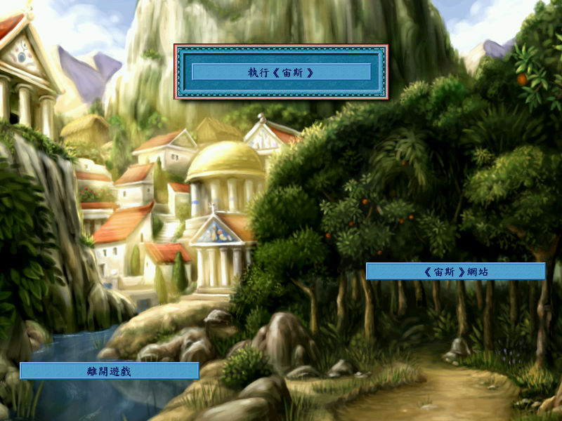
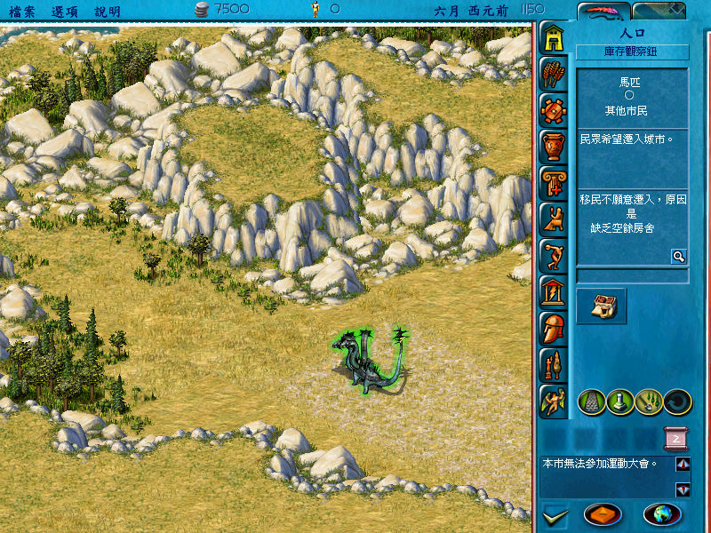

名稱：宙斯／天神宙斯／宙斯：眾神之王 (Zeus: Master of Olympus，中文／英文版)
簡介：Impressions Games 2000年出品的城鎮建造模擬遊戲，由Sierra代理發行，2001年由
第三波中文化並代理發行，同年推出「波賽頓／海神波賽頓（Poseidon: Master of
Atlantis）」資料片 [待補]。


保護：繁中版為光碟，英文版為光碟SecuROM 4.48
備註：資料片無繁中版，繁中版若安裝英文資料片，則會變回英文版。
檔案：nocd101.rar = 1.01主程式免光碟檔
nocd200.rar = 2.00資料片免光碟檔